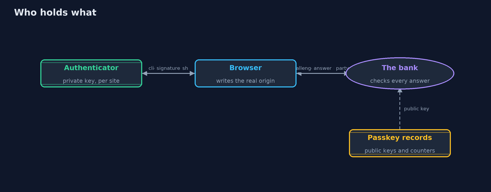
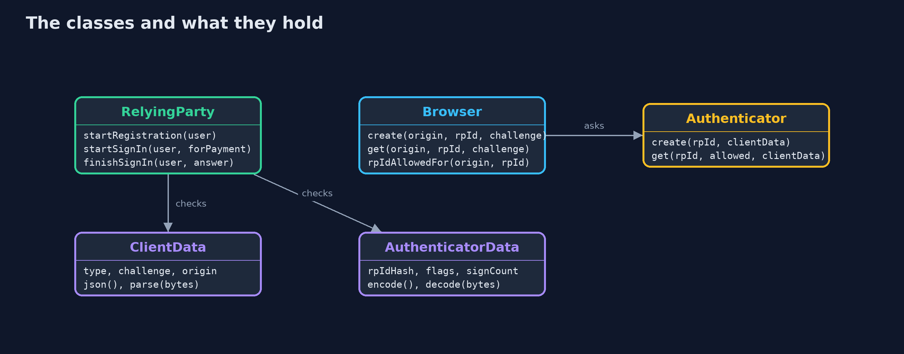
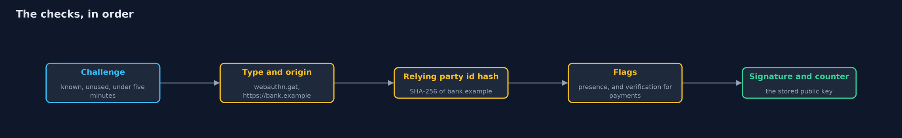
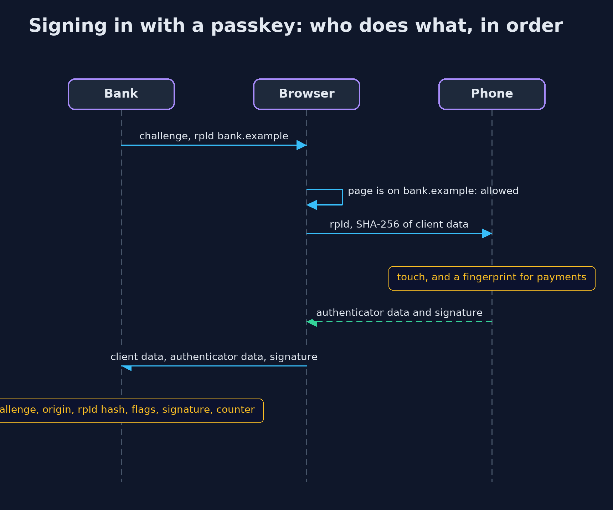

Passkeys and WebAuthn
src/main/java/com/jk/explore/security/passkeys/
├── Authenticator.java A model authenticator: a phone, a laptop or a security key
├── AuthenticatorData.java The authenticator data that the authenticator itself writes: the SHA-256 hash of the relying party id it signed for, flags for user presence and user verification, and a signature counter
├── B64.java Base64url without padding (RFC 4648 section 5), the encoding WebAuthn uses for challenges and credential ids
├── Browser.java The browser between a web page and the authenticator
├── ClientData.java The client data that the browser, not the web page, writes for every WebAuthn call: the type of call, the server's challenge and the origin of the page that asked
├── PasskeysDemo.java Runs the online bank's passwordless sign-in in five numbered acts
├── RelyingParty.java The bank's side of WebAuthn: it hands out single-use challenges, stores each customer's public keys, and checks every answer in a fixed order: challenge, type, origin, relying party id hash, flags, credential, signature and counter
├── Sha256.java SHA-256, used for the relying party id hash and for the hash of the client data
└── SimClock.java A clock in whole seconds that only moves when told to, so challenge expiry is exact and repeatable
A passkey is a key pair made for one site: the bank keeps only the public key, the device signs a fresh challenge for that site and no other, and the browser writes down where it really was, so a look-alike page gets nothing it can use. What is left to guard is recovery, and every older way in that is still switched on.
A passkey is a WebAuthn credential: a key pair made by an authenticator (a phone, a laptop or a security key) for one relying party, the site that will check it. The site keeps only the public key. To sign in, the site sends a fresh challenge; the authenticator signs it, together with the SHA-256 of the relying party id it was made for and a few flags, and the browser adds client data that records the origin of the page that asked. Because the browser, not the page, fills in the origin, and the authenticator only signs for the site it was made for, a passkey cannot be typed into the wrong site. That is what NIST SP 800-63B calls a phishing-resistant authenticator.
This project maps to OWASP Top 10 (2025) A07 Authentication Failures; to CWE-287, improper authentication, and CWE-294, authentication bypass by capture-replay; to NIST SP 800-63B, phishing-resistant authenticators; to the authentication chapter of OWASP ASVS 5.0; and to WebAuthn Level 3.
The demo builds a model relying party, browser and authenticator with the JDK alone, with ES256 (P-256) signatures and data structures laid out as WebAuthn lays them out: client data JSON, 37 bytes of authenticator data, and a signature over both.
The idea in everyday terms
Think of a house key cut to fit one front door. A password is a secret anyone can be talked into saying to the wrong person. The passkey is a key that simply does not turn in any other lock, and the door, not the person holding the key, checks that the key was cut for it. A copy of the lock tells a burglar nothing, because the lock holds no key. What is left to steal is the spare key under the mat: the recovery path.
The scenario
An online bank replaces passwords with passkeys. Ana registers her phone, signs in, opens a look-alike page, pays a bill, and has her key copied. Ben loses his phone. The demo shows, for each step, what the bank checks and what it refuses.
Run
./gradlew run
The demo tells the story in 5 acts, each printing exact numbers that the tests check:
| Act | What it shows |
|---|---|
| 1. Registering a passkey: the bank keeps only a public key | The bank sends a 32-byte challenge; Ana's phone makes a P-256 key pair for bank.example and returns a 16-byte credential id and a 91-byte public key; the bank stores nothing that can sign, so a copy of its records is useless. |
| 2. Signing in: a fresh challenge, signed once | The phone signs 37 bytes of authenticator data and the hash of the client data; the bank accepts it once, then refuses the same answer, an answer 301 seconds late, and an answer whose flags were changed after signing. |
| 3. A look-alike site gets nothing it can use | On bank-example.test the phone has no passkey for that name, the browser will not ask for bank.example, and even a relayed answer carries the real origin, which the bank refuses; a typed password, by contrast, works at the bank. |
| 4. User verification for payments, and counters against copies | A payment with only a touch is refused and accepted with a fingerprint; a copied key signs with counter 7 after the real phone already reached 7, so it is refused and the passkey suspended; synced passkeys always report 0. |
| 5. The bill: recovery, lost devices and the move away from passwords | Ben's lost phone leaves his security key and a one-time recovery code; recovery is now the weakest way in, and Ana's password still works until the bank switches it off. |
Test
./gradlew test
26 tests in DemoRunsTest, EncodingTest, RelyingPartyTest. Base64url is checked against the RFC 4648 test vectors and SHA-256 against the published abc vector. Every check the relying party makes is a test that refuses an answer with its exact reason, including the five-minute challenge boundary, a copied key caught by the counter, and the browser's relying party id rule.
What the simulation got right, and what it left out
Everything runs in memory with a simulated clock in whole seconds; no real browser or authenticator is used. Keys, challenges and credential ids are random, so the demo prints only facts that do not depend on them: sizes, flags, counters and verdicts. The demo password and recovery code are demo values that protect nothing.
Technologies and versions
Every version below is pinned in the project's build files and was the latest stable release when the project was built.
| Technology | Version | Used for |
|---|---|---|
| Java | 25 | the language and runtime; a Gradle toolchain finds or downloads the JDK |
| Gradle | 9.8.1 (wrapper) | build and run; nothing to install, the wrapper downloads it |
| org.junit.jupiter:junit-jupiter | 6.1.3, set by junit-bom | JUnit 5: the tests (tests only) |
| org.junit.platform:junit-platform-launcher | 6.1.3, set by junit-bom | JUnit platform launcher, which Gradle needs to run the tests (tests only) |
| videokit | repository tool (tools/videokit) |
the narrated video and animation: Piper en_US-amy-medium, speed 0.8, longer pauses (the amy-slow voice) |
Learning Material
| Document | What it is for |
|---|---|
| Problem statement | the situation and what the project must show |
| Prerequisites | what you need to know first |
| Passkeys and WebAuthn, explained | the acts in prose |
| Session guide | a one-hour lesson with exercises |
| Animated walkthrough | the acts step by step, narrated |
| Threat model | what is protected, who could harm it, and how, using STRIDE |
| Spec | what this project must be true of |
| Expected output | the golden demo output every test and every port checks against |
The idea in one picture
The private key never leaves the authenticator; the browser writes the origin; the bank holds only public keys.

Where each piece sits
The browser enforces the site rule and writes client data; the authenticator signs; the relying party checks.

How the data moves
The bank refuses at the first check that fails, and a challenge is used up whatever the outcome.

Who calls whom, in order

Video
video/passkeys-explained.mp4 (with .m4a audio and .srt subtitles) is built by video/build_video.sh. Rendered media is not committed.
What it costs
- Recovery becomes the weakest link. A customer who loses the only device holding the passkey needs another way in. Register two passkeys, issue one-time recovery codes, and treat any recovery flow as carefully as sign-in itself.
- Old ways in keep old weaknesses. While a password still works alongside a passkey, the account is only as strong as the password. Switch passwords off once a customer has two passkeys.
- Synced passkeys trade clone detection for convenience. A passkey shared between a person's devices reports a counter of zero, so the counter cannot spot a copy; its protection is the account it syncs through.
- The bank must check every field, in order. Skipping the origin, the relying party id hash, the flags or the challenge's single use undoes the protection; a maintained library makes those checks for you.
- A model is for learning. Real WebAuthn uses CBOR and COSE keys, attestation formats and many authenticators; this project uses an encoded public key instead and no attestation, and the
-with-spring-securityversion uses Spring Security's passkey support.
When this is too much
For a site with no accounts worth stealing, a password and a rate limit may be enough. For a bank, an e-mail provider or anything that recovers other accounts, passkeys are the default today, with user verification for payments and a carefully guarded recovery path.
Where you have already met this
- "Sign in with a passkey" buttons, and a fingerprint or face prompt instead of a password field.
- Security keys that plug into a USB port and must be touched.
- Passkeys that appear on a new phone because they were synced through the phone maker's account.
- Bank apps that ask for a fingerprint again before a payment.
Where this sits
This project is in identity-and-access in the intermediate track, after oauth2-authorization-code-pkce. It builds on the beginner projects digital-signatures and totp-multi-factor, whose one-time codes can still be phished.